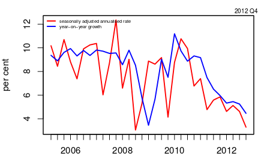
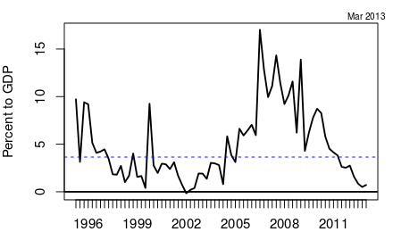
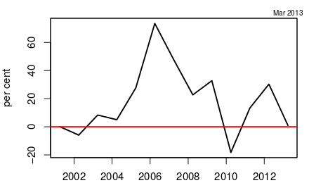

Growth pick-up still a mirage
Financial Express, 30th April 2013
Even if all projects were to get clearances tomorrow, we may see actual activity in less than halfThe Prime Minister's Economic Advisory Council (PMEAC) report suggests that higher GDP growth next year is achievable if government policies and administrative actions support investment. Primarily, if the government clears stalled projects, and environment and other clearance are given for projects through the Cabinet Committee on Investments (CCI), Indian GDP growth can rise to 6.7% next year.
   The problem of stalled projects has seen some progress in recent weeks as the CCI gave clearances to oil and gas projects. The mandate of the CCI is to give clearances to large projects. While this is a step in the right direction, and would lift investment and growth even if only a few large projects get kick-started, there are additional difficulties that would need to be addressed before growth can pick up to 6.7% next year.
First, some of the projects that are stalled today were bid before the 2008 crisis. Remember the pre-crisis years? Growth in India was in double digits, the world economy was booming and almost every investment project looked attractive. The pegging of the rupee to the dollar led to a high growth of forex reserves and consequently bank credit. Some of the bids by the private sector were quite aggressive based on its over-optimism. In today's far more sober environment, it is not clear that even if given clearances, all of those projects would be attractive. At least a third of them might appear to be unattractive.
Second, the projects that are stuck in mid-way for many years have had financial implications for the balance sheets of the companies and banks involved. Long delays in completion of projects has meant that companies have not been able to pay back loans taken for the projects. Banks that had given loans have seen these loans get into trouble. Many banks are reluctant to call these non-performing loans. Many loans have been re-structured. RBI data shows that the growth of restructured advances has been much faster than credit growth of banks. Between March 2009 and March 2012, while total gross advances of the banking system grew at a growth rate of less than 20%, restructured standard advances grew by over 40%. Public sector banks account for a disproportionately large part of this. Restructured accounts have grown at a rate of 47.86% in public sector banks as against a growth rate of credit of 19.57%. Loans to industry, especially large industry, have seen the most restructuring. Public sector banks, especially after the recent corruption scandals, may be reluctant to lend to companies in distress even when they can.
The above suggests that even if a project bid by a large company obtains a clearance, the company may no longer be in a position to undertake fresh borrowing to undertake the project. Or banks may no longer lend to it for new projects beyond the lending they are doing to recover old loans. This may account for another one third of the stalled projects not being revived even if given clearances.
Further, the terms of restructuring loans to companies in distress usually assume that in a couple of years the economy will recover and the company will be able to pay back the loan. Figure 1 shows the sharp decline in GDP growth, down to 4.5% in the quarter ending December 2012 as one of the sharpest downswings in growth in recent years. The seasonally-adjusted quarter-on-quarter growth was 3.5%.
Nor have we seen investment pick up. Figure 2 shows the seasonally-adjusted quarter-on-quarter growth of investment by the private corporate sector. It was 0% in the January to December quarter. When investment is 0% and GDP growth is 3.5%, it will take a strong change in the business environment and sentiment for them to pick up.
Figure 3 shows that those signs of change in business perceptions are not to be seen yet. It shows new project announcements per quarter by all sectors and all categories of investors. Project announcements as a share of GDP have been declining quite steadily since 2010. When sentiments improve, this is the first place where we expect to see the optimism. Even if projects are not finally implemented, they must at least be announced for the investment to kick off.
What we might see in the next few months may be a pick up due to some projects being revived. Once investment activity starts, it may induce optimism. Yet one must be aware that even if all projects were to get clearances tomorrow, we may see actual activity in less than half. We will be fortunate if growth does not fall below that of the 5% we appear to have achieved in 2012-13.
Back up to Ila Patnaik's media page
Back up to Ila Patnaik's home page